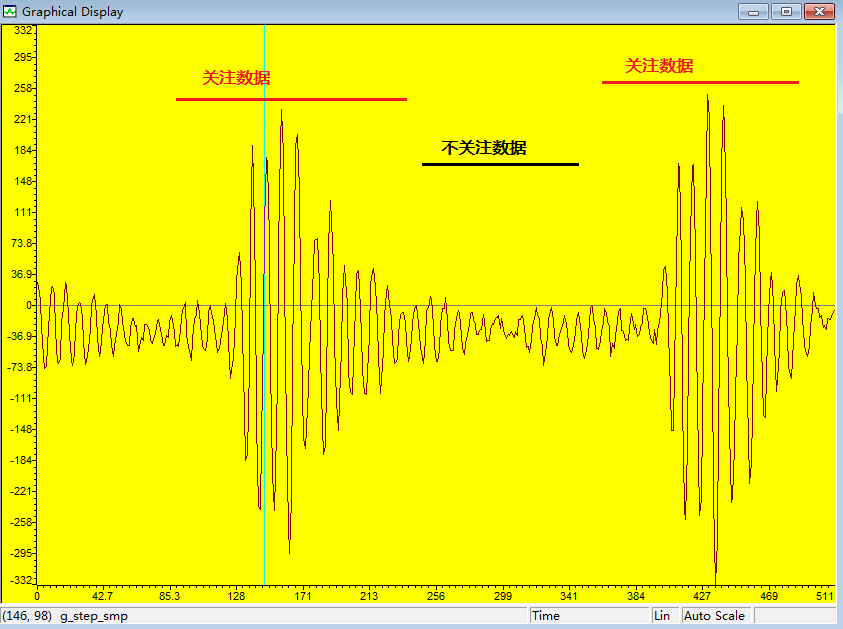
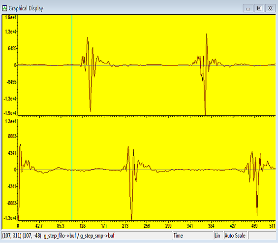
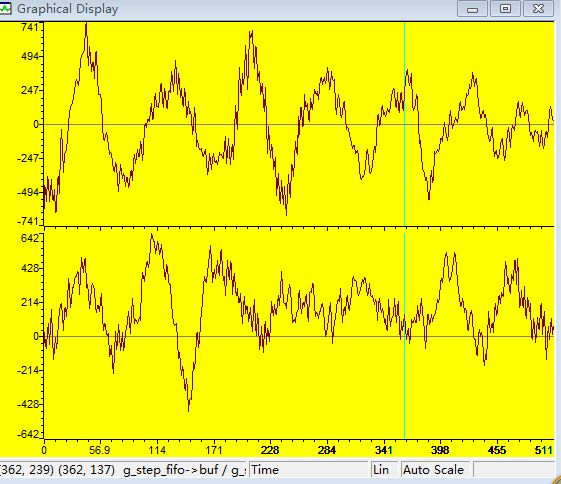

文题：自适应含噪信号过零率算法
作者：xiahouzuoxin
日期：2014-09-11
本文讨论的是实际使用过程中计算过零率的一种自适应方法。过零率常用于语音检测识别中，一般叫短时过零率更贴切些（指一段短时平稳信号才能计算过零率），简单有效，近期亦打算将这个简单的概念用于识别脚步声和卡车声（近似短时平稳）。过零率的定义计算一般通过下面的表达式描述：
过零率是对频率从时域进行的一种简单的度量，一般情况下，过零率越大频率近似越高，反正亦然，相关推倒可参考相关文献。
自然信号由于电路、环境引入的噪声会在0水平位置波动，直接按上式计算过零率，严重影响识别效果。因此，本文在计算过零率时，对信号的幅值进行阈值限定，阈值的计算方法是：
其中F为阈值与峰峰值的系数因子，一般F在0.1~0.2之间，Vpp表示当前短时信号的峰峰值，THR(t)表示t时段的阈值。
因此增加阈值判别后计算过零率的流程图为：

对应的C程序为：
/* signal thresh adaptive structure */
struct st_zerorate_thr{
uint32_t pre;
uint32_t cur;
};
/*
* @brief
* Calculate short time zero cross rate. Short time means n, n often choose to
* be a frame(256,512 and so on)
*
* The diffrence with upstairs is that this one consider the adaptive thresh
* when checking the signal, which removes the influence of noise.
* @inputs
* x[] - input sound signal
* n - size of a frame
* @outputs
* @retval
* zero cross rate in a frame length
*/
uint16_t zero_rate(int16_t x[], int n, struct st_zerorate_thr thr)
{
int i = 1; /* Init to 1 */
uint16_t zero_cnt = 0;
float tmp = 0;
uint8_t x_pre = 0;
while ( (x[i] < thr.cur) && (x[i] > -thr.cur) && (i<n) ) {
i++;
}
x_pre = x[i++];
while ((i < n) && ((x[i] > thr.cur) || (x[i] < -thr.cur)) ) {
tmp = x[i] * x_pre;
if (tmp < 0) {
zero_cnt = zero_cnt + 1;
}
x_pre = x[i];
i++;
}
return zero_cnt;
}上面代码定义了阈值结构体st_zerorate_thr，更新阈值的方法按(2)式执行，
#define TH_FACTOR (0.2f) /* 0.1~0.2 */
void zerorate_thr_update(struct st_zerorate_thr thr, uint32_t peak_value)
{
thr.pre = thr.cur;
thr.cur = (uint32_t)(((thr.pre + TH_FACTOR * peak_value) / 2) );
}关于初始阈值的选择：
这时要考虑的情况有些复杂，除了噪声阈值外，还要考虑能量阈值（确定是否是信号段），如下图：

上图为采集的地震信号（比如脚步声信号），只有有些数据才是我们想要分析的，因此可以通过能量对数据进行划分。为简单起见，直接通过信号的幅值对确定有效信号区域也是可以的。
当大于某个固定的阈值energy_thr时，并持续一段时间时，认为信号进入有效区域，开始按“自适应噪声阈值”的方案进行计算过零率
能量阈值一般都大于自适应噪声阈值，可以通过实验获得：
采集无信号时的背景噪声，计算峰峰值；
采集有目标时的信号，计算峰峰值
在两者之间找到一条错误率最低的水平分界值，作为能量阈值。
为简化程序的设计，本程序使用状态机的设计思想，2个状态：安静（无目标）状态、有目标状态。C程序上直接使用switch...case语句就可以了，对应的C程序如下：
/*
* @brief
* Calculate short time zero cross rate. Short time means n, n often choose to
* be a frame(256,512 and so on)
*
* The diffrence with upstairs is that this one consider the adaptive thresh
* when checking the signal, which removes the influence of noise.
* @inputs
* x[] - input sound signal
* n - size of a frame
* thr - threshold(Vp) for removing noise ripple
* energy_thr - threshold(Vp) for ensure wether is signal start or stop
* @outputs
* @retval
* zero cross rate in a frame length
*/
uint16_t zero_rate(int16_t x[], uint32_t n, struct st_zerorate_thr thr, uint16_t energy_thr)
{
uint32_t i = 0;
uint16_t zero_cnt = 0;
int16_t x_pre = 0;
uint8_t status = 0;
uint8_t energy_cnt = 0;
#define CONTINUOUS_BEGIN (2) // 持续大于能量阈值的点数，用于检测信号开始
#define CONTINUOUS_END (5) // 持续小于能量阈值的点数，用于检测信号结尾
for (i=0; i<n; i++) {
switch(status) {
case 0: // Slience or maybe signal
if (abs(x[i]) > energy_thr) {
if (++energy_cnt >= CONTINUOUS_BEGIN) {
status = 1;
energy_cnt = 0;
x_pre = x[i];
} else {
// do nothing
}
}
break;
case 1: // Signal
if (abs(x[i]) > thr.cur) {
if ( (x[i] * x_pre) < 0) {
zero_cnt = zero_cnt + 1;
}
x_pre = x[i];
energy_cnt = 0;
} else {
if (abs(x[i]) < energy_thr) {
if (++energy_cnt >= CONTINUOUS_END) {
status = 0;
energy_cnt = 0;
}
} else {
// do nothing
}
}
break;
default:
status = 0;
break;
}
}
return zero_cnt;
}好吧：结论只有一个：
在含有低频噪声的环境，使用过零率是很难区分脚步声和卡车的。
如下，是分别采集脚步声和卡车的图形：
 
因为卡车的采集信号高频都载波到低频信号上了，而在未判断实际目标之前，是无法使用低通滤波进行滤波（可能滤掉脚步声信号）。
综上，我看过很多的论文，大都提到使用过零率对脚步声了卡车进行识别，而且识别效果还不错，我不知他们的实验环境是什么样的，至少从上面的实验分析，还是有问题的。
因此，提出新的特征，用于区分两类信号——数字化占空比。其过程是：设定一个阈值，从头到尾扫描一帧信号，大于阈值的点设为1，否则设为0，我称之为数字化过程，然后计算高电平（即1）占所有一帧（512点）的百分比，用该百分比作为脚步声和卡车的识别数学特征。好了，我们用数学表述得专业些：
其中{x>=THR}表示序列中值大于THR的点数。
测试结果：取THR=0.4*Vpp，则计算脚步信号的Dutycycle=4，而卡车信号的Dutycycle=113，差异非常明显。